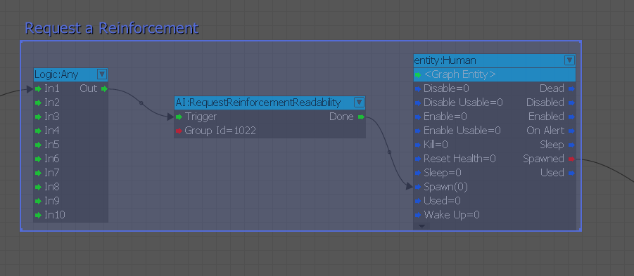

AIGlobalPerceptionScale
Set/Unset a specific global scale for the AI perception.
ActionAbort
Use this node to define clean-up procedure executed when AI Action is aborted.
ActionEnd
Use this node to end the AI Action graph.
ActionStart
Represents the User and the used Object of an AI Action. Use this node to start the AI Action graph.
ActiveCount
Counts how many AIs are active.
ActiveCountInFaction
Counts the number of currently active AIs in a specific faction.
ActiveCountMonitor
Monitors active AI count against some limit, and outputs periodically the current state. When the condition is met, the monitor loop will stop automatically and it needs to be started manually again if desired.
AlertMe
Generic AI signal.
AttentionTarget
Outputs AI's attention target.
AutoDisable
Controls AutoDisable.
BehaviorTree
Reset the AI modular behavior tree.
Communication
The specified AI plays the given communication.
EventListener
The highest level of alertness of any agent in the level.
Execute
Executes an AI Action.
Faction
Simply passes the selected faction to the output port. This is more of a helper node to circumvent manual typing.
FactionReaction
Set/Get Faction reaction info.
GroupAlertness
The highest level of alertness of any agent in the group.
GroupCount
The highest level of alertness of any agent in the group.
GroupIDGet
Sets and outputs AI's group ID.
GroupIDSet
Merges AI group 'from' to group 'to'.
IgnoreState
Switching species hostility on/off (makes AI ignore enemies/be ignored).
IsAliveCheck
Check which actors of a group are alive.
LookAt
Sets AI to look at a point, entity or direction.
NavCostFactor
Set navigation cost factor for traveling through a region.
ObjectDrop
Drops grabbed object.
ObjectUse
Uses an object.
PerceptionScale
Scales the agent's sensitivity.
PerceptionState
Enabling/Disabling or Resetting AI actor's perception.
RegenerateMNM
Triggers recalculation of MNM data for a specified bounding box (leave blank for whole level).
RequestReinforcementReadability
When a reinforcement is spawned in the level, it could be helpful for the player to detect in the scene that one agent is performing some action to communicate the decision of calling backups.
This node has been introduced to allow level designers to request the AI to perform this readability action. An example of how to use the node can be found in the following picture:

The node is currently signaling AI that they are in a good moment to call reinforcement. The Done output is triggered when at least one AI in the specified group is alive and the signaling is performed.
Note that currently, the node doesn't guarantee that the readability action will be performed: this decision is in total control of the AI behavior and it could fail.
SetCommunicationVariable
While executing a behavior, AI agents will try to communicate their intentions triggering specific VO lines in the relation of the state they are in. Some states could have special variation, for example depending on the level the agent is.
Level designers need to give hints to the Communication Manager about which condition are fulfilled at each specific time. This node can be used to achieve this goal.
The variables are defined into the file: GameSDK\Scripts\AI\Communication\CommunicationVariable.xml
SetFaction
Set the faction an AI character belongs to.
SetState
Changes Smart Object State.
ShapeState
Enable or Disable AIShape.
ShootAt
Set AI to shoot at position or entity.
Signal
Generic AI action.
SmartObjectEvent
Triggers a smart object event.
SmartObjectHelper
Outputs AI's attention target parameter.
Stance
Body stance controller.
Deprecated Nodes
- AIAlertness
- AIAwareness
- AIBodyDir
- AICheckStates
- AIDropObject
- AIEnable
- AIEnableShape
- AIExecute
- AIFollow
- AIFollowPath
- AIFollowPathSpeedStance
- AIFormation
- AIFormationJoin
- AIGoto
- AIGotoSpeedStance
- AIGroupAlertness
- AIGroupBeacon
- AIGroupCount
- AIGroupID
- AIGrabObject
- AIIgnore
- AILookAt
- AIMergeGroups
- AIModifyStates
- AISetCharacter
- AISetNavCostFactor
- AISetState
- AIShootAt
- AISignal
- AISpeed
- AIStance
- AIWeaponDraw
- AIWeaponHolster
- AIWeaponSelect
- ActionAbort
- ActionEnd
- ActionStart
- AlertnessFilter
- AttTarget
- AutoDisable
- ChangeParameter
- Coordination
- DebugAISpeed
- EventListener
- GoToEx
- LoadNavMesh
- ReadabilityDialog
- UseObject